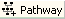
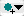
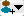
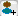

| Actions |
How |
| Create New Project |
Click new project button  or use menu File/New Project. Enter properties in the property dialog. Click OK. or use menu File/New Project. Enter properties in the property dialog. Click OK. |
| Save Project |
Click save project button or use menu File/Save. |
| Open Graph Pane for a Pathway, Reaction or Complex |
Double click the pathway, reaction or complex in the graph pane, process tree or task tree. |
| Insert New Pathway |
Open the graph pane for the pathway. Click insert pathway button  in the toolbar. Enter properties for new pathway. Click OK. |
| Insert New Reaction |
Open the graph pane for the pathway. Click insert reaction button  in the toolbar. Enter properties for new reaction. Click OK in the toolbar. Enter properties for new reaction. Click OK |
| Link Two Events (Pathways or Reactions) |
Click to select the event (Pathway or Reaction) and move the cursor a little bit to display the arrows around the node. Press the mouse to select an outbound or inbound arrow and drag it to another node till the background color of that node turns green. Release the mouse. |
| Add Existing Pathways or Reactions to a Pathway |
Double click the parent pathway to open the graph pane. Select the pathway or reaction in the process tree. Drag and drop it to the graph pane for the parent pathway. Use the control key for multiple selections. |
| Add Existing Simple Entities or Complexes to a Reaction |
Double click the reaction to open the graph pane. Select the entity or complex in the process tree. Drag and drop it to the graph pane for the reaction. Select role for entity or complex in the role dialog. Click OK. Use the control key for multiple selections. |
| Add Simple Entities or Complexes to a Reaction |
Click insert entity button  or insert complex button  at the top-right corner in the graph pane for the reaction. Select role for entity or complex. Enter properties in the property dialog. Click OK. |
| Add Simple Entities or Complexes to a Complex |
Open the graph pane for the complex. Click add entity button or add complex button  at the top-right corner in the graph pane for the reaction. Enter properties in the property dialog. Click OK. |
| Enter Properties for an Instance |
Click to select the instance in the graph pane. Click properties button to open the property dialog. Enter properties for the instance. Click OK. |
| Add Entities or Complexes from the GK Database to a Reaction |
Double click reaction to open the graph pane. Select an entitiy or complex from the tree "Molecules from GK Database". Drag and drop it to the graph pane for the reaction. Choose "Replace Properties" (to use the properties from the pre-compiled entity) or "Keep Properties" (to use properties in the existing instance) if an option dialog appears. Select role for entity or complex in the role dialog. Click OK. Use the control key for multiple selections. |
| Delete |
Select an instance to be deleted. Click delete button in the main toolbar. Click OK to confirm. |
| Finish a Task |
Select a task in the task tree. Double click it to open a dialog. Enter information in the dialog. Click OK. |
| Specify Stoichiometry for an Input or Output in a Reaction |
Open the graph pane for the reaction. Double click the cell for the stoichiometry in the table. Enter the stoichiometry. Type enter key or click other cell in the table to accept the value. |
| Specify Stoichiometry for a Subunit in a Complex |
Open the graph pane for the complex. Double click the cell for the stoichiometry in the table. Enter the stoichiometry. Type enter key or click other cell in the table to accept the value. |
| Search an Instance in the Process Tree |
Hold the control key and type F key (Ctrl-F) or use menu Edit/Find to bring up the search dialog. Enter the display name for searching. Click OK. The instance in the process tree will be highlighted in case of a match. |
| Switch a Reaction to a Pathway |
Select the reaction by clicking it. Click the right button of the mouse to bring up the popup menu. Select "Switch to Reaction". This works only for an empty reaction. |
| Switch a Pathway to a Reaction |
Select the pathway by clicking it. Click the right button of the mouse to bring up the popup menu. Select "Switch to Pathway". This works only for an empty pathway. |